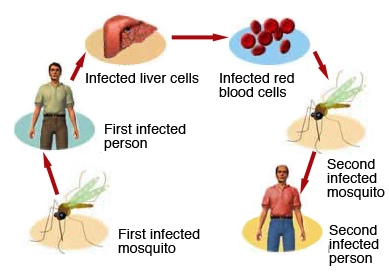

Malaria
Malaria is a life-threatening disease. It’s typically transmitted through the bite of an infected Anopheles
mosquito. Infected mosquitoes carry the Plasmodium parasite. When this mosquito bites any person, the parasite is
released into human,s bloodstream. The parasites continue to infect red blood cells, resulting in symptoms that occur
in cycles that last two to three days at a time.
What causes malaria?

Malaria can occur if a mosquito infected with the Plasmodium parasite bites any person. There are four
kinds of malaria parasites that can infect humans:
- Plasmodium vivax,
- Plasmodium ovale
- Plasmodium malariae and
- Plasmodium falciparum.
Plasmodium falciparum causes a more severe form of the disease and those who contract this form of
malaria have a higher risk of death. An infected mother can also pass the disease to her baby at birth. This is known as
congenital malaria. Malaria is transmitted by blood, so it can also be transmitted through:
- an organ transplant
- a transfusion
- use of shared needles or syringes
what are the symptoms of malaria?
The symptoms of malaria typically develop within 10 days to four weeks following the infection.
In some cases, symptoms may not develop for several months. Some malarial parasites can enter the body but will be
dormant for long periods of time.
Common symptoms of malaria:
| Body pain |
High fever | Headache |
|
| Diarrhoea | Anemia | Muscle pain |
| Nausea | Convulsions | Bloody stools |
What is the treatment and prevention for malaria?
- The primary objective of treatment is to ensure a rapid and complete elimination of the parasite from the patient's blood in order to prevent progression of uncomplicated malaria to severe disease or death.
- The definite diagnosis is made by looking at the blood of an infected patient under the microscope (blood smear) and identifying the presence of the parasite. The patients' blood is prepared under a slide with a specific stain to help identify the parasite. This is the most widely performed and accepted test.
- People travelling to areas where malaria is common typically take protective drugs before, during and after their trip. Treatment includes antimalarial drugs.
- Malarone, which is a combination of two antimalarial medicines (atovaquone and proguanil). Malarone is taken to treat malaria caused by chloroquine-resistant Plasmodium falciparum.
- Quinine plus an antibiotic such as clindamycin, doxycycline, or tetracycline for most Plasmodium falciparum infections.